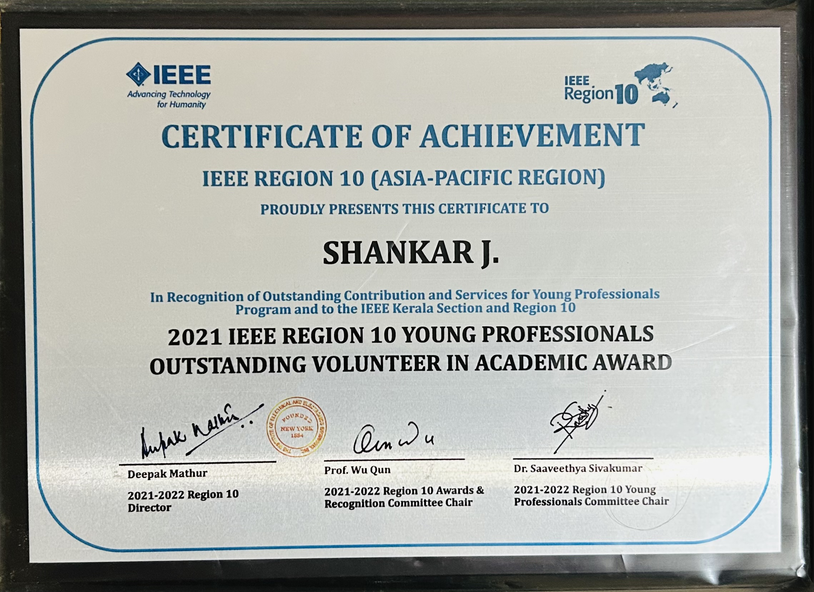
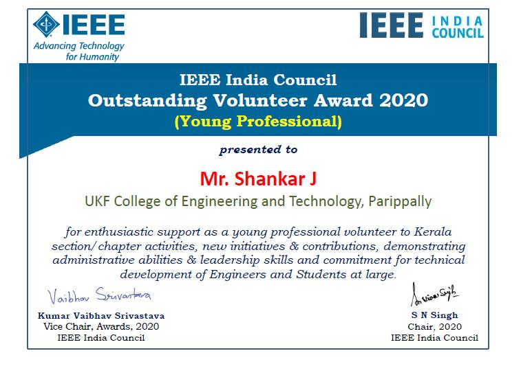
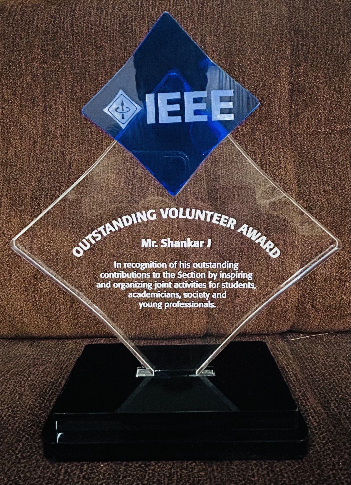
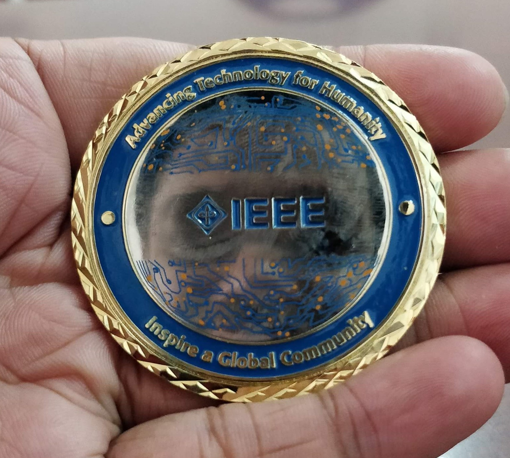

IEEE R10 Young Professionals Outstanding Volunteer in Academic Award
IEEE Region 10 (Asia-Pacific) · 2021
For outstanding contributions organising joint activities for students, academicians, society and young professionals.
Before the research, I was a telecom engineer trainee handed five students and told to teach them. No training. No framework. Just the pressure of five confused faces waiting for clarity.
That moment cracked something open. I realised I could take the hardest idea in a room and build a bridge to it.
That single class became 10+ years of teaching Electronics & Communication Engineering as an Assistant Professor under A P J Abdul Kalam Technological University: 481 hands-on sessions, 16,500+ learners, 25+ mentored student projects.
And it led somewhere I never imagined: a PhD at the National Institute of Technology Calicut, where I now build EEG deep-learning models for brain-computer interfaces, teaching computers to read minds, quite literally.
Today I do two things at the highest level I can. In the lab: BCI and EEG models pushing toward clinically viable neurotech. On the stage: keynotes, FDPs and workshops where any audience (technical or not) walks away with frameworks they can use the next day.
Quoted as an expert on AI and productivity in Jodie Cook's "Will Every Entrepreneur Have An AI Coach? (Experts Share Predictions)".
Read the article →Featured in the 23 August 2024 edition of The Times of India.
View the article →
IEEE Region 10 (Asia-Pacific) · 2021
For outstanding contributions organising joint activities for students, academicians, society and young professionals.

IEEE India Council · 2020
For enthusiastic support to section and chapter activities, new initiatives, leadership and commitment to the technical development of engineers and students.

IEEE Kerala Section · 2020
In recognition of outstanding contribution by inspiring and organising joint activities for students, the academic society and young professionals.

IEEE · 2018
Presented by Mr. Jim Jefferies, IEEE President 2018.
ICMT 2013 · Guangzhou, China
For "Combined Utility and Adaptive Residence Time Based Network Selection Algorithm for 4G Wireless Networks", published in Lecture Notes in Electrical Engineering.
From five confused faces to 16,500+ learners: I bring the same clarity to your audience.
Check availability